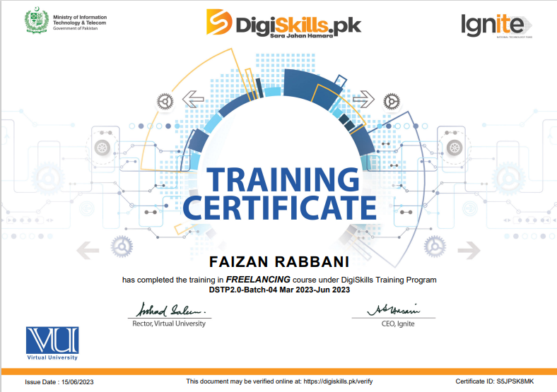

I completed a comprehensive course on Amazon Virtual Assistant, where I learned product research, sourcing, listing optimization, and PPC campaign management. This course enabled me to effectively support Amazon sellers in optimizing their businesses.
In this freelancing course, I gained insights into building a freelance career, learning key strategies for finding clients, managing projects, and growing a sustainable online presence. It provided essential tools for success in the freelancing industry.
